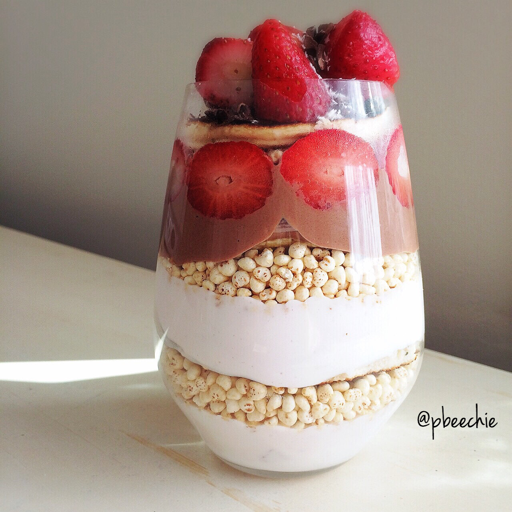

Strawberry + Chocolate Pancake Parfait

Pancake parfaits just make so much sense. Layers of strawberry greek yogurt, puffed millet, cake batter protein pancakes, strawberries, and chocolate yogurt (unsweetened cocoa powder, plain greek yogurt, and stevia). Topped with more strawberries, cacao nibs, and unsweetened shredded coconut. Defying the laws of pancake physics one stack of pancakes at a time. Best part of all of this is that it's allll free of any artificial sweetener or sugar! Only stevia and natural goodness :) After devouring this amazing parfait, I headed off to the doctor for more bloodwork. I've been missing way too many days of work from fatigue and overall pain... It's really frustrating. I can't predict my "bad" days and I'm lucky to have one "good" day a week. My workouts have been a lot less intense, I'm having to sacrifice most stuff I love just in order to sleep 9-10+ hours a day, and I just feel so foggy and sick. My doctor describes the symptoms as fibromyalgia like, but there must be some underlying cause she can't figure out... The past bloodwork was mostly normal, so she took more tests today. Including an HIV test ._. Anyways. I'm going to be seeing a rheumatology/fibromyalgia specialist soon so hopefully this will all go away...
Strawberry + Chocolate Pancake Parfait
Serves: 1
-
42g pancake mix
-
1/4 cup liquid egg whites
-
1/4-1/3 cup water
-
1/2 container plain greek yogurt (3 oz)
-
1 TBSP unsweetened cocoa powder
-
1 stevia packet
-
1 container strawberry greek yogurt (6 oz)
-
1 cup puffed millet cereal
-
6-8 strawberries
-
1 TBSP cacao nibs
-
1 TBSP unsweetened shredded coconut
-
First, mix your pancake mix with the liquid egg whites and water. The water amount varies on whether you like thick or thin pancakes, but add until the batter is the consistency of your liking. Cook your pancakes in a large pan sprayed with nonstick spray for 3-4 mins per side! It will make 3-4 pancakes.
-
Next, mix the plain yogurt, cocoa powder, and stevia. This is your chocolate yogurt.
-
Then layer everything! Layer the pancakes, chocolate yogurt, strawberry yogurt, and millet cereal. Then top with chopped strawberries, cacao nibs, and coconut. Dig in!!
Nutritional Info: 471 calories; 8 g fat, 50 g carbs (14 g fiber), and 58 g protein